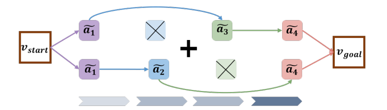

|
I am a third year Ph.D. student in Department of Automation at Tsinghua University, advised by Prof. Yansong Tang and Prof. Jiwen Lu. I did my bachelor and master degree in Department of Physics at University of Oxford. My research focuses on computational imaging and deep learning, especially super-resolution. |

|
|
|
|  |
Zhiheng Li, Wenjia Geng, Muheng Li, Lei Chen, Yansong Tang, Jiwen Lu, and Jie Zhou IEEE International Conference on Computer Vision (ICCV), 2023 [Paper] [arXiv] [Code] We propose Skip-Plan, a condensed action space learning method for procedure planning in instructional videos. |